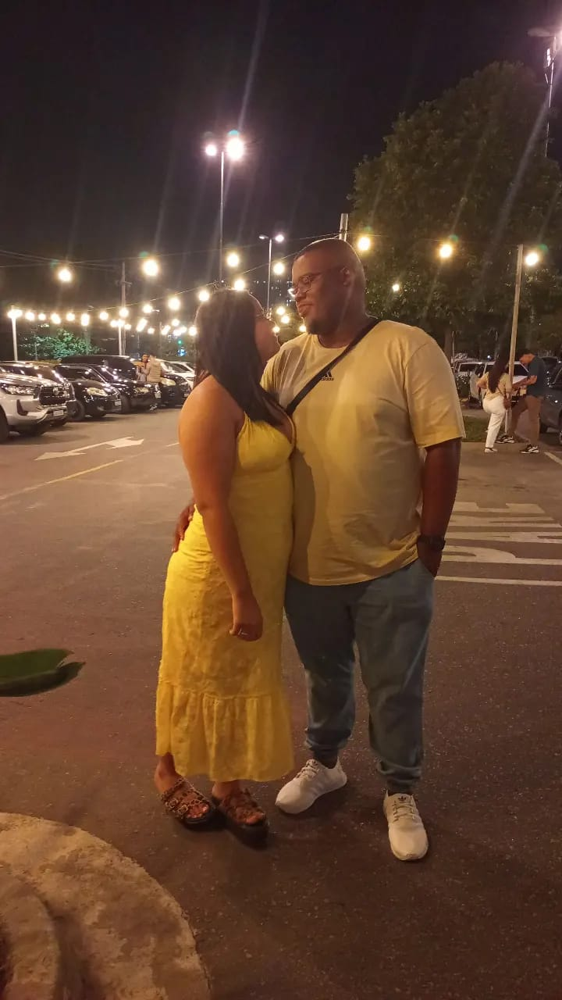

Juntos para Sempre 💞
❤️
"Não importa o que aconteça, enquanto estivermos juntos, o nosso amor será mais forte que qualquer desafio. Estamos prontos para enfrentar o futuro, lado a lado." 💑
Ir para a próxima página